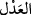
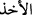
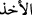

kabul edilmez.
Buradaki “
” kelimesi; “(O gün) kimseden fidye alınmaz.” (el-Bakara, 2/48)
âyetinde vârid olduğu üzere “fidye verilen şey” anlamında değil masdar manasınadır.
Eğer “
(almak)” fiili, manevî şeyler için değil, bilakis görünen nesneler için
kullanılır.” dersen, biz buna cevaben şöyle deriz: Evet, söylediğin doğrudur. Ancak
Fahreddin Razî şöyle demiştir: “sadakaları alır.” (et-Tevbe, 9/104) âyetinde olduğu
gibi “
” fiili, “kabul etme” anlamında da kullanılır.” Şu halde açıklamakta
olduğumuz âyette “
” “kabul etme’” anlamına hamledilirse, bu takdirde onun
masdara isnâdı caiz olur ve bunda herhangi bir mahzûr da yoktur.
Bu âyet ile kastedilen, mücrim nefse bütün kurtuluş yollarının ahirette kapalı
olduğudur. Böyle olacağını kesin olarak bilen kimse nasıl olur da günaha yöneldiğinde
tir tir titremez.
“İşte onlar” dinlerini oyun ve eğlence edinip dünya hayatına aldanan kimseler
“kazandıkları yüzünden” kötü amelleri ve bozuk akîdeleri sebebiyle “azaba teslim
edilmişlerdir.”
Farsça tefsirde şöyle denilmiştir: “Onlar o kimselerdir ki işledikleri kötü işler
sebebiyle azab meleklerine teslim olunmuşlardır.”
Ebüssuud der ki: “İşte onlar, yaptıkları kötülüklere teslim edilmişlerdir.”
Sanki “Yaptıkları yüzünden azaba teslim edildiklerinde onlar için ne vardır?” diye
sorulmuş ve cevâben şöyle buyurulmuştur. “Onlar için kaynar sudan bir içki vardır.”
Bu su karınlarında kaynar ve bağırsaklarını parçalar. “ve inkârlarından dolayı da acı
bir azab vardır!” Dünyada iken sürdüregeldikleri inadî küfürden ötürü, bedenlerini
kasıp kavuran bir alevden, acı bir azab vardır.
Bil ki, Allah’ın âyetlerini yalanlamak ve onlarla alay etmek küfürdür. Küfrün sonu da
acıklı bir azabdır. Bunun gibi günahlarda ısrar etmek de, isyankâr mü’minin kâfir olarak
ölmesine sebeb olur. Bundan Allah’a sığınırız.
Ebu İshak el-Fezârî’nin şöyle dediği rivayet olunur: Bir adam vardı. Sık sık bizim
meclisimize gelir ve bizimle oturmayı severdi. Ancak yüzünün yarısı örtülü idi. Ona:
“Sen bizimle çok oturup kalkan birisin ve hâlâ yüzünün bir kısmını kapatıyorsun,
gizlediğin yeri bana göster.” dedim. Adam: “Bana güvence verir misin?” dedi. “Evet,
veririm.” dedim. Bunun üzerine adam şöyle dedi:
“Ben mezarları kazıp kefen soyan biri idim. Bir gün bir kadın defnedildi ve onun
kabrine varıp kazmaya başladım. Kerpiçlerine ulaşınca hemen onlara el attım ve
üzerinde örtülü olan engelleri kaldırdım. Sonra kefeninin dış kısmına (lifâfe) el attım ve
onu çekmeye başladım. Kadın da vermek istemiyordu. Onu böyle görünce dedim ki:
“Ne dersin, şimdi bana galib geleceğini mi zannediyorsun?”
Ben böyle deyince o, birden benim omuzlarıma çullandı, kefenini çekip aldı. Elini
kaldırıp, olanca hızıyla bana bir tokat vurdu. Ebu İshak der ki; bunları anlattıktan sonra